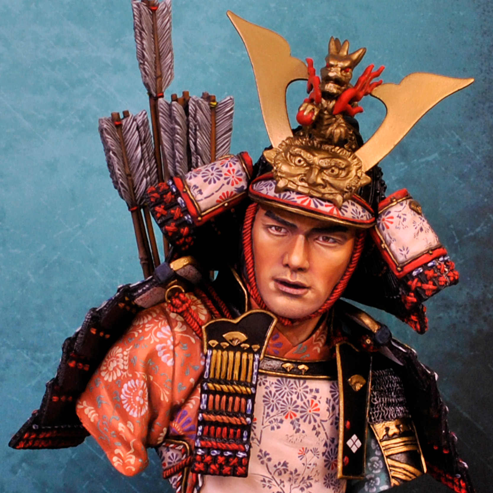
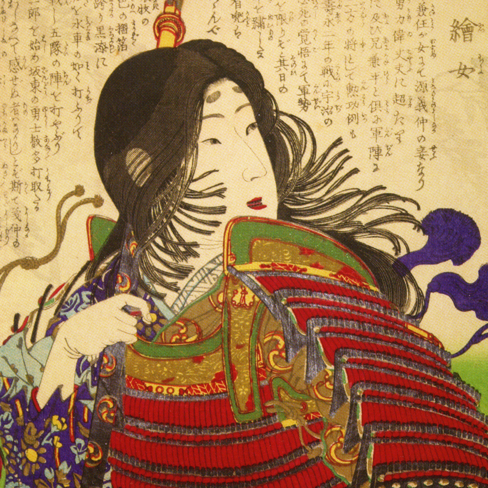

MINAMOTO NO YOSHITUNE
( 1159-1189 ):

Destin particulièrement dramatique que celui de...
lire l'article
MIYAMOTO MUSASHI
( 1584-1645 ):
Probablement le Samouraï le plus connu du Japon...
lire l'article
LES 47 RONINS:
( 1701-1703 )
Connu sous le nom d'Akô Gishi, cette histoire ...le nom d'Akô Gishi,
lire l'article
SAIGO TAKAMORI:
( 1827-1877 )
Probablement le Samouraï le plus connu du Japon...
lire l'article
TOMOE GOZEN :
( 1827-? )

L'une des seules femmes qui ait conquit un nom dans la grande...
lire l'article
TAIRA NO MASAKADO :
( ?-940 )
Devenu célèbre durant 5 années, Taïra no Masakado était ...
lire l'article
AMAKUSA SHIRÔ:
( 1621-1638 )
De son vrai nom Masuda Tokisada, cesdjfbsd qsdfqsdfsd ...
lire l'article
TORII SUNE'EMON :
( ? -1575 )
L'archétype de la bravoure légendaire des Bushis bglbdflgv...
lire l'article
KONDÔ ISAMI :
( 1834 -1868 )
Le nom de ce Samouraï est toujours associé au Japon à celui du Shisen Gumi...
lire l'article
ÔSHIO HEIHACHIRÔ:
( 1793 -1837 )

Samouraï et philosophe qui consacra sa vie et qqsdqd dqd ssesa mort...
lire l'article
BYAKKO-TAI:
( Septembre 1868 )
Moins connu que les 47 Ronins, cet épisode tragique de la guerre de Boshin...
lire l'article